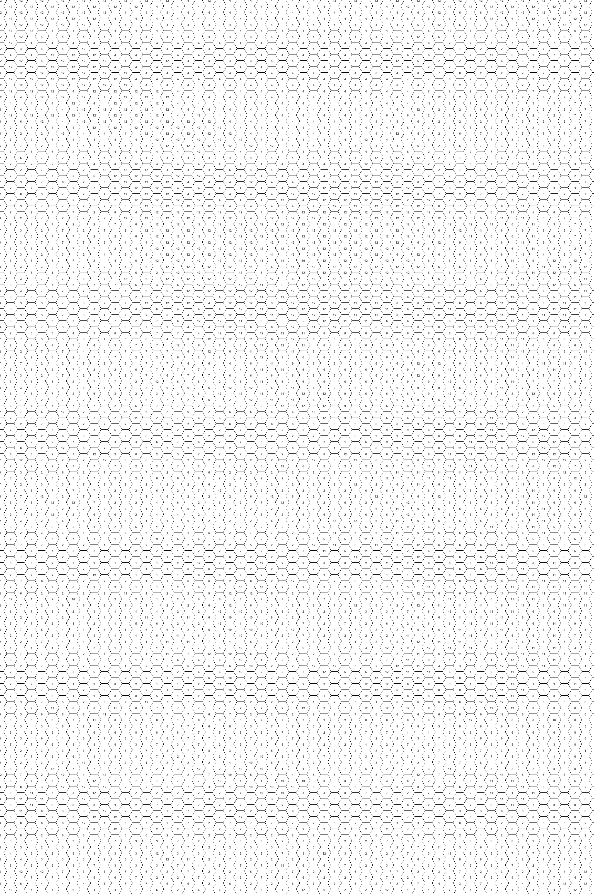
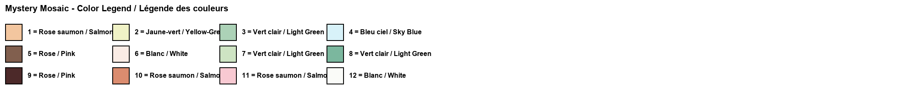
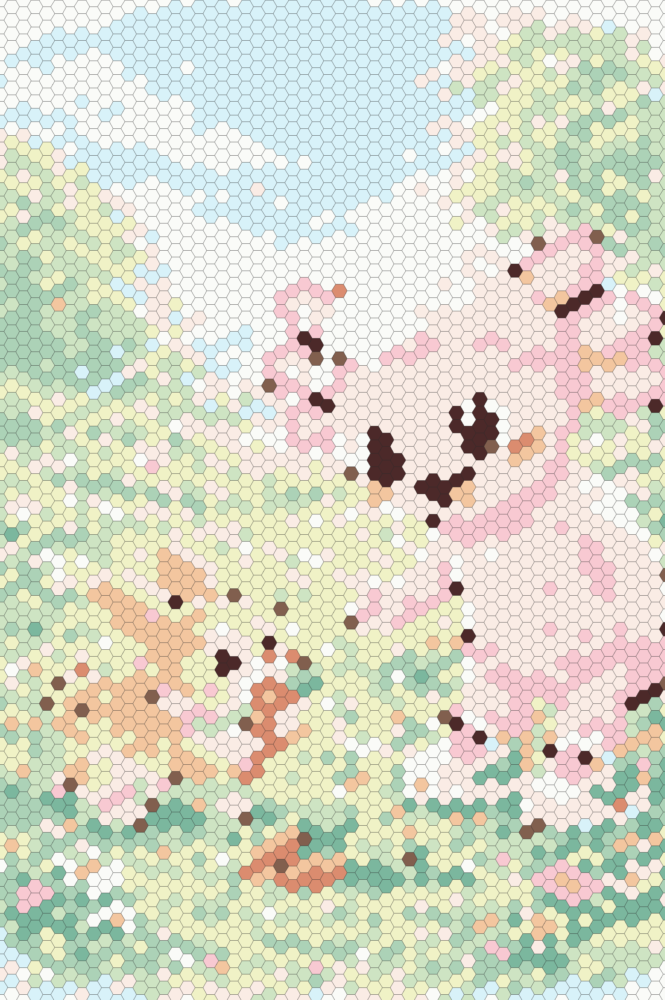

Original ImageImage originaleImagen original

Mystery Mosaic – Can you reveal the hidden image?Mosaïque mystère – Peux-tu révéler l'image cachée ?Mosaico misterioso – ¿Puedes revelar la imagen oculta?

Color LegendLégende des couleursLeyenda de colores

Answer Key (Spoiler!)Corrigé (Spoiler !)Clave de respuestas (¡Spoiler!)

Create Your Own Mystery Mosaic!Crée ta propre mosaïque mystère !¡Crea tu propio mosaico misterioso!
Upload any image and transform it into a printable mystery mosaic. Try 3 for free!Télécharge n'importe quelle image et transforme-la en mosaïque mystère imprimable. Essaie 3 gratuitement !Sube cualquier imagen y transfórmala en un mosaico misterioso imprimible. ¡Prueba 3 gratis!
🎨 Try the Mosaic Generator🎨 Essayer le Générateur🎨 Probar el GeneradorAbout This Rabbit Mystery Mosaic
Hop into creativity with this free printable rabbit mystery mosaic! This delightful color by number activity features Coco the Axolotl in a beautiful flower garden, feeding crunchy carrots to the fluffiest bunny you've ever seen. The mosaic coloring page is composed of hexagonal tiles, each containing a number that matches a color in the legend. Color them all correctly and watch the adorable garden scene bloom before your eyes!
Bunny coloring pages are a perennial favorite with young children, especially around springtime and Easter. This printable color by number offers something special: the picture is hidden until every tile is colored in. Kids must follow the number-color key carefully, turning what looks like a grid of plain hexagons into a vibrant work of art. It's a fantastic kids activity that builds concentration, number recognition, and artistic confidence all at once.
This free printable rabbit mystery mosaic is perfect for spring crafts, Easter baskets, homeschool activities, or anytime fun. Print multiple copies to share with the whole family! And when your little one wants to create something truly personal, our mosaic generator can transform any photo into a one-of-a-kind mystery mosaic ready to print and color.
À propos de cette mosaïque mystère lapin
Sautez dans la créativité avec cette mosaïque mystère lapin gratuite à imprimer ! Cette charmante activité de coloriage par numéros met en scène Coco l'Axolotl dans un magnifique jardin fleuri, donnant des carottes croquantes au lapin le plus duveteux que vous ayez jamais vu. La page de coloriage mosaïque est composée de cases hexagonales, chacune contenant un numéro correspondant à une couleur de la légende. Coloriez-les toutes correctement et regardez l'adorable scène de jardin s'épanouir sous vos yeux !
Les pages de coloriage de lapins sont un favori éternel chez les jeunes enfants, surtout au printemps et à Pâques. Ce coloriage par numéros à imprimer offre quelque chose de spécial : l'image est cachée jusqu'à ce que chaque case soit coloriée. Les enfants doivent suivre attentivement le code numéro-couleur, transformant ce qui ressemble à une grille d'hexagones en une œuvre d'art vibrante. C'est une activité fantastique pour les enfants qui développe la concentration et la reconnaissance des nombres.
Cette mosaïque mystère lapin gratuite à imprimer est parfaite pour les bricolages de printemps, les paniers de Pâques, les activités d'école à la maison, ou tout moment de plaisir. Imprimez plusieurs copies à partager ! Notre générateur de mosaïques peut transformer n'importe quelle photo en mosaïque mystère unique prête à imprimer et colorier.
Sobre este mosaico misterioso de conejo
¡Salta a la creatividad con este mosaico misterioso de conejo gratuito para imprimir! Esta encantadora actividad de colorear por números presenta a Coco el Axolotl en un hermoso jardín de flores, alimentando con zanahorias crujientes al conejito más esponjoso que hayas visto. La página de mosaico para colorear está compuesta por casillas hexagonales, cada una conteniendo un número que coincide con un color de la leyenda. ¡Coloréalas todas correctamente y mira cómo la adorable escena del jardín florece ante tus ojos!
Las páginas para colorear de conejos son un favorito perenne entre los niños pequeños, especialmente durante la primavera y Pascua. Esta hoja de colorear por números para imprimir ofrece algo especial: la imagen está oculta hasta que cada casilla esté coloreada. Los niños deben seguir cuidadosamente la clave de número-color, convirtiendo lo que parece una cuadrícula de hexágonos simples en una vibrante obra de arte. Es una fantástica actividad infantil que desarrolla la concentración, el reconocimiento de números y la confianza artística.
Este mosaico misterioso de conejo gratuito para imprimir es perfecto para manualidades de primavera, canastas de Pascua, actividades de educación en casa, o diversión en cualquier momento. ¡Imprime múltiples copias para compartir! Nuestro generador de mosaicos puede transformar cualquier foto en un mosaico misterioso único listo para imprimir y colorear.
More Mystery MosaicsPlus de mosaïques mystèresMás mosaicos misteriosos